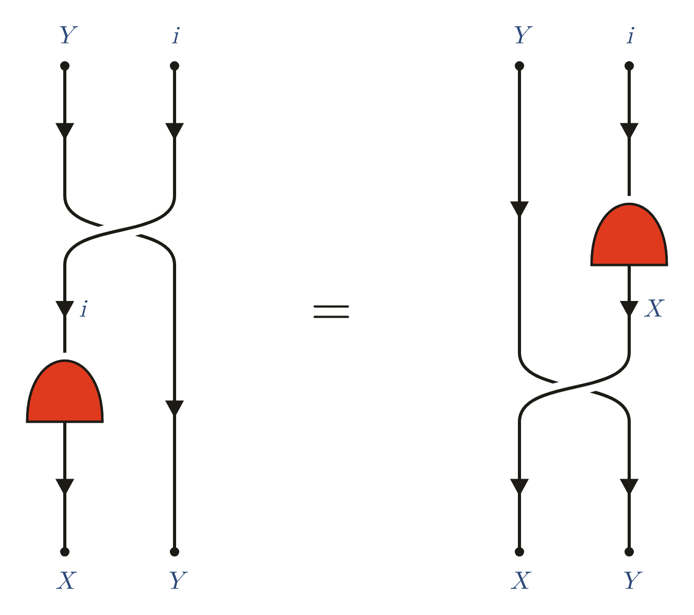
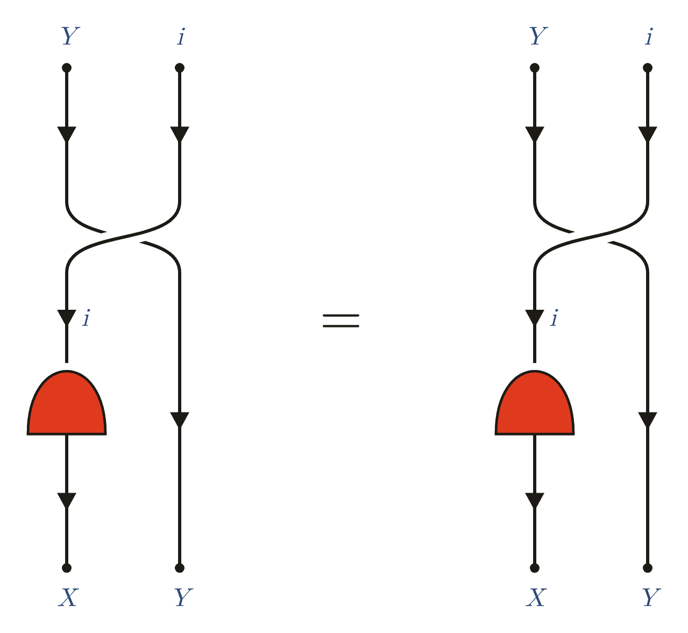

In a braided pivotal pre-fusion category, naturality of the braiding lets a curvilinear box pass under or over a strand. The editor's R4/R5 rule moves a one-line box through a crossing, and it treats p_α and q_α like any other box:
Signature and expression (duals: X*, pre-fusion ticked):
simple i
partition α : X → i
τ_{i,Y}(p_α ⊗ id_Y) = (id_Y ⊗ p_α)τ_{X,Y}

| side | expression | rules Simplify uses |
|---|---|---|
| 1 | already in normal form | |
| 2 | R4, R5: naturality of τ |
Normal form:

The editor reports: ✓ Both sides reduce to the same normal form, so the equation holds. · Open this step in the editor
Moving boxes with several arcs through a bundle of crossings is not in the editor.
By Dara O Shayda and Noor Hoshino (星野ヌール) · © Computational Classnotes · CC BY-NC-SA 4.0